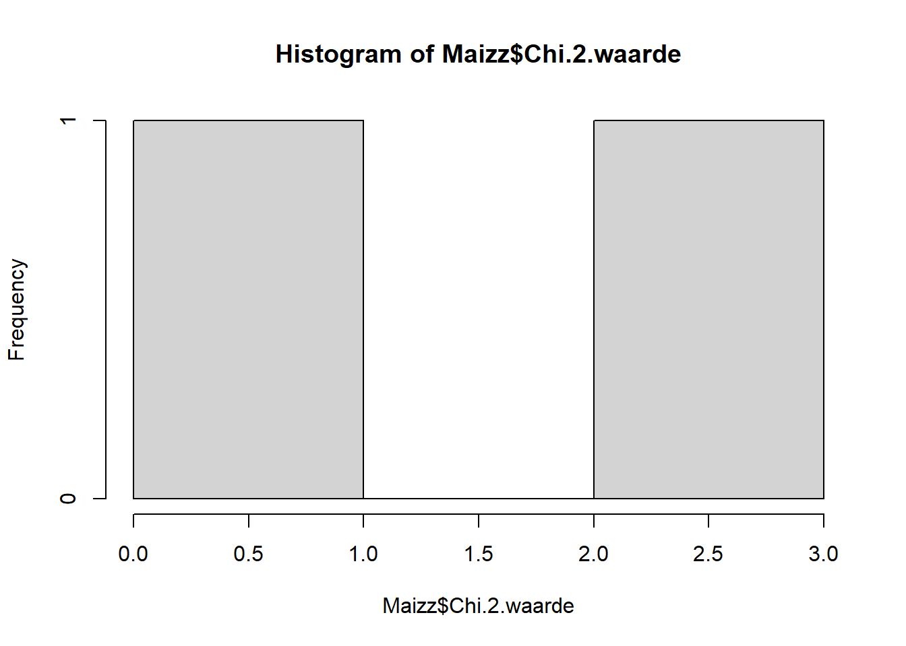
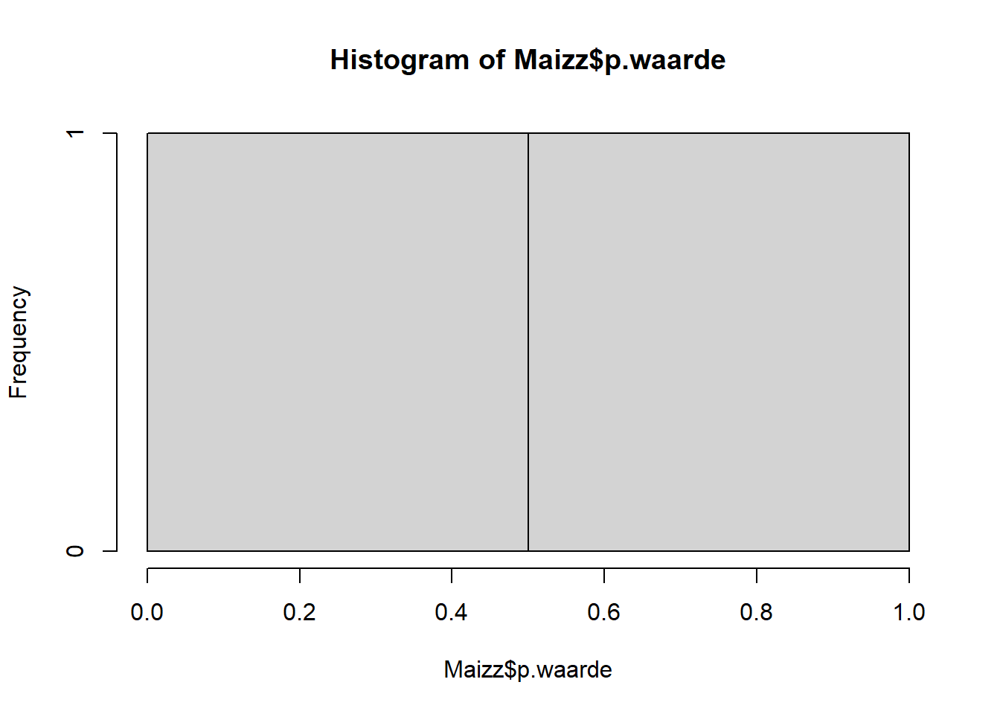

Maizz <- read.delim2("Maizz.txt")
hist(Maizz$Chi.2.waarde)
In het praktische gedeelte bij deze opdracht wordt de stelling geponeerd dat in de empirische wetenschap we geen zekerheid ten aanzien van een hypothese kunnen krijgen. Dit is niet volledig correct. Denk aan het bekende voorbeeld van de zwarte zwaan. Stel dat we uitsluitend witte zwanen waarnemen. Daaruit kunnen we niet afleiden dat alle zwanen wit zijn; er kan immers een anders gekleurde zwaan bestaan die we simpelweg nog niet hebben waargenomen. De hypothese blijft dus onzeker, hoeveel witte zwanen we ook tellen. Maar één enkele niet-witte zwaan volstaat om haar te weerleggen, en de onzekerheid ten aanzien van de hypothese verdwijnt, we kunnen haar ontkennen. Dit is het geval voor logische hypotheses.
Het maïsexperiment is fundamenteel anders, omdat de hypothese zelf een kansuitspraak is; een 3:1-kansverdeling verbiedt geen enkele uitkomst, maar maakt sommige aannemelijker dan andere. Zelfs als de hypothese klopt, is de waargenomen verhouding door toeval bijna nooit exact 3:1, zoals we zagen. Eén afwijking weerlegt hier dus niets; de vraag is of de afwijking groter is dan we redelijkerwijs aan toeval kunnen toeschrijven. De logica verschuift van zekerheid naar kans en waarschijnlijkheid, en de onzekerheid blijft altijd bestaan.
In het dagelijks leven gebruiken we kans en waarschijnlijkheid vaak door elkaar. In de wiskunde (kansrekening) bestaat er echter een subtiel verschil, dat we later dit jaar bespreken.
Jullie hebben de resultaten van jullie metingen ingevoerd in het online formulier. Hieronder zie je de verdeling van de berekende \(\chi^2\)-waarden op basis van jullie individuele metingen.
Maizz <- read.delim2("Maizz.txt")
hist(Maizz$Chi.2.waarde)
Vraag 1.1 Stel dat maïs zich precies aan de verwachte 3:1-verdeling houdt, dus dat \(H_0\) waar is. Verwacht je dan dat alle studenten dezelfde \(\chi^2\)-waarden vinden, of nog steeds verschillende? Met andere woorden: ontstaat er ook onder \(H_0\) een verdeling van \(\chi^2\)-waarden? Zo ja, dan is dat een speciale verdeling. Wat zou een goede naam voor die specifieke verdeling zijn?
Jouw antwoord:
Wat onze waargenomen verdeling laat zien, is een voorbeeld van een stochastische variabele: een grootheid waarvan de waarde door toeval wordt bepaald. Ze heeft drie kenmerkende eigenschappen:
Biologie zit vol met toeval en variatie; het is een essentiële eigenschap van het leven zelf. Juist doordat de onderliggende grootheden stochastisch zijn, ontstaat de variatie die we bv als genetische diversiteit en biodiversiteit herkennen.
De \(\chi^2\)-waarde voldoet aan alle drie: ze ligt pas vast na het tellen en berekenen (2), verschilt van student tot student door toeval in de steekproef (3), en volgt daarmee een kansverdeling (1). Er is dus onzekerheid over welke \(\chi^2\)-waarde een meting oplevert.
Dit is bovendien geen toeval, maar een noodzakelijk gevolg: \(\chi^2\)is een functie van stochastische variabelen, zoals het aantal zaden, en is daardoor zelf ook een stochastische variabele, die dus per definitie een eigen kansverdeling bezit. Wiskundigen hebben die \(\chi^2\)-verdeling onder bepaalde aannamen kunnen afleiden:
\[f(x; k) = \frac{1}{2^{k/2}\,\Gamma(k/2)}\, x^{k/2 - 1} e^{-x/2}, \quad x > 0\]
Dit is een ingewikkelde functie die jullie niet uit je hoofd hoeven te kennen. Het belangrijke deel is de zinsnede onder bepaalde aannamen. Een cruciale aanname bv is dat \(H_0\) correct is. Dat lijkt merkwaardig, we willen \(H_0\) juist verwerpen, en toch nemen we haar even als waar aan. Maar precies dat is de geniale zet: alleen door een concrete hypothese als “precies \(3:1\)” aan te nemen, kunnen we exact uitrekenen hoe onwaarschijnlijk onze data zouden zijn als \(H_0\) klopt. Het alternatief, “er is een afwijking”, is te vaag om mee te rekenen: het kan oneindig veel vormen aannemen. Door \(H_0\) als vertrekpunt te nemen, krijgen we een rekenbaar model, en daar komt de \(\chi^2\)-verdeling vandaan. We komen hier later dit jaar in Statistiek 1 in het algemeen op terug.
Meer algemeen geldt dat we bij statistische toetsen en wiskundige modellen aannamen altijd expliciet moeten benoemen en controleren.
De wetenschap kan niet zonder aannamen: alleen onder bepaalde condities kunnen we een theorie of model formuleren. Van die aannamen moet je je altijd bewust zijn.
Deze onzekerheid wordt nog beter voelbaar bij de p-waarde waarmee we het behouden van \(H_O\) op baseren, die op haar beurt een functie van de stochatische variabele \(\chi^2\) is. Hieronder zie je de verdeling van de p-waarden over de groepen.
hist(Maizz$p.waarde)
Vraag 1.2 Als de p-waarde zelf ook een stochastische variabele is, wat betekent dat dan voor onze uitspraak over \(H_0\)?
Antwoord:
Nemen we een kritieke waarde \(\alpha\) van 0.05 waarbij we de nulhypothese verwerpen, dan blijkt iets opmerkelijks: ook de conclusie, verwerpen of niet, wordt bepaald door een stochastische variabele. Of een student de nulhypothese verwerpt, hangt af van een p-waarde die zelf door toeval varieert. Daarmee erft ook de uitspraak over de hypothese onzekerheid. Een tweede opmerkelijk gevolg is dat zelfs wanneer de 3:1-hypothese correct is, sommige groepen haar toch zullen verwerpen, puur door toeval in de steekproef; bijvoorbeeld als ze teveel rode of gele korrels hebben gemeten. Dit noemen we later een type-I-fout en we weten precies de kans daarop. Voor nu is het genoeg om te zien dat de onzekerheid zich overerft tot in de conclusie zelf.
Nemen een kritieke waarde van 0.05 waarbij we de nulhypothese te verwerpen, dan blijkt iets opmerkelijks: ook de conclusie, verwerpen of niet, wordt bepaald door een stochastische variabele. Of een student de nulhypothese verwerpt, hangt af van een p-waarde die zelf door toeval varieert. Daarmee erft ook de uitspraak over de hypothese die onzekerheid. Een tweede opmerkelijk gevolg is dat zelfs wanneer de 3:1-hypothese correct is, sommige groepen haar toch zal verwerpen, puur door toeval in de steekproef; bv als ze teveel rode of gele hebben gemeten. Dit noemen we later een type-I-fout en we weten precies the kans daarop. Voor nu is het genoeg om te zien dat de onzekerheid zich overerft tot in de conclusie zelf.
Er bestaan verschillende maten in de statistiek welke de hoeveelheid onzekerheid kunnen duiden. Later in het jaar komen we bijvoorbeeld de standaard fout (SE) tegen. Nu wil ik kijken naar een andere zeer belangrijke wetenschappelijke maat voor onzekerheid, namelijk entropie. Entropie kan worden opgevat naast een maat voor onzekerheid, ook als een maat voor willekeur of wanorde en zoals we zullen zien ook biodiversiteit en positie-specifieke entropie in moleculaire biologie, en is alleen een functie van een kansverdeling.
De entropie van een discrete kansverdeling zoals voor biodiversiteit en positie-specifieke entropie wordt gedefinieerd als:
\[H(p) = -\sum_i p_i \log(p_i) \tag{1.1}\]
waarbij \(p_i\) de kans is op uitkomst \(i\) die een bepaalde verdeling volgt.
Een hoge entropie wijst op grote onzekerheid. Dit treedt op wanneer de kansen relatief gelijk verdeeld zijn over de mogelijke uitkomsten zoals de eerlijk dobbelsteen.
Een lagere entropie wijst op minder onzekerheid. Dit treedt op wanneer kansen geconcentreerd zijn rond één of enkele uitkomsten. Bijvoorbeeld een oneerlijke dobbelsteen met een grotere kans op een 6; we zijn minder verrast als we een 6 gooien, de uitkomst is meer voorspelbaar
Vraag 1.3 Leg uit waarom bij een meer voorspelbare uitkomst de entropie afneemt.
Jouw antwoord:
De betekenis van entropie hangt af van het toepassingsgebied:
Vraag 1.4 Leg uit waarom entropie een maat kan zijn voor ongelijkheid in punt 3. Wordt de waarden van de entropie groter of kleiner bij sociale ongelijkheid (Thiel-index)?
Jouw antwoord:
Vraag 1.5 Leg uit waarom zou entropie dan een maat zijn voor biodiversiteit? Heeft een hogere biodiversiteit een kleinere of grotere entropie?
Jouw antwoord:
We hebben entropie leren kennen als een maat voor onzekerheid of verrassing: hoe moeilijker de uitkomst vooraf te voorspellen is, hoe hoger de entropie. Diezelfde gedachte kunnen we toepassen op DNA.
Wanneer we hetzelfde gen van verschillende soorten onder elkaar leggen, ontstaat een alignment: overeenkomstige posities staan in dezelfde kolom. Hieronder staat een klein voorbeeld voor zes soorten en zeven posities.
# Het alignment als data frame: elke RIJ een soort, elke KOLOM een positie
alignment <- data.frame(
positie_1 = c("A", "A", "A", "A", "A", "A"),
positie_2 = c("T", "T", "T", "T", "T", "T"),
positie_3 = c("G", "G", "G", "G", "G", "G"),
positie_4 = c("C", "T", "A", "G", "C", "A"),
positie_5 = c("A", "A", "A", "A", "A", "A"),
positie_6 = c("A", "G", "G", "A", "T", "G"),
positie_7 = c("T", "T", "T", "T", "T", "T"),
row.names = c("soort 1", "soort 2", "soort 3",
"soort 4", "soort 5", "soort 6")
)
alignment positie_1 positie_2 positie_3 positie_4 positie_5 positie_6 positie_7
soort 1 A T G C A A T
soort 2 A T G T A G T
soort 3 A T G A A G T
soort 4 A T G G A A T
soort 5 A T G C A T T
soort 6 A T G A A G TBekijk de kolommen (posities) van boven naar beneden, niet de rijen. Elke kolom vertelt hoe gevarieerd die positie is over de zes soorten.
Vraag 1.6 Op welke posities staat bij alle soorten dezelfde bouwsteen? En op welke positie verschillen de soorten het sterkst? Beschrijf in woorden.
jouw antwoord:
Vraag 1.7 Stel je sluit je ogen en iemand wijst een willekeurige soort aan. Bij welke positie kun je met zekerheid voorspellen welke bouwsteen daar staat, nog vóór je kijkt? Bij welke positie is dat vrijwel onmogelijk? Koppel je antwoord aan het begrip voorspelbaar.
jouw antwoord:
Vraag 1.8 Bereken met de code hieronder de entropie van de verschillende kolommen door op het kleine driehoekje recht boven deze chunk te klikken. Welke van deze posities zijn het meest geconserveerd (constrained) tussen de soorten, en welke het minst? Leg uit hoe je tot je antwoord komt.
Probeer de code te begrijpen als je tijd hebt, maar dat is niet het eerste doel van deze opdracht. Hint: we hebben hier zelf een functie gemaakt. Waarom gebruiken we de logaritme met grondtal 2? Hadden we deze vraag ook kunnen beantwoorden met grondtal 10, of met de natuurlijke logaritme?
entropie <- function(kolom) {
p <- table(kolom) / length(kolom)
-sum(p * log2(p))
}
sapply(alignment, entropie)positie_1 positie_2 positie_3 positie_4 positie_5 positie_6 positie_7
0.000000 0.000000 0.000000 1.918296 0.000000 1.459148 0.000000 jouw antwoord:
Vraag 1.9 Een positie die bij alle soorten identiek is, is door de evolutie heen nauwelijks veranderd. Bedenk een biologische reden waarom juist die posities niet mogen veranderen, terwijl andere posities vrij kunnen variëren.
jouw antwoord:
Vraag 1.10 De genen die de vroege ontwikkeling van een lichaam sturen, behoren tot de meest geconserveerde in het hele dierenrijk: dieren die honderden miljoenen jaren geleden een gemeenschappelijke voorouder deelden, hebben op die posities nog steeds dezelfde bouwstenen. Wat zegt lage entropie op die posities over het belang van die genen voor de ontwikkeling? En waarom is lage entropie hier een spoor van diepe verwantschap tussen soorten?
jouw antwoord:
We gaan nu gebruik maken van een belangrijke eigenschap van het logarithm. Er is iets vreemds aan de levende wereld. Aan de ene kant wordt ze steeds complexer, histories een groei in biodiversiteit, een rijkdom aan vorm en functie. Aan de andere kant herkennen we juist heldere structuur: soorten, genera en families laten zich netjes onderscheiden. Meer variatie en meer ordening tegelijk; dat lijkt een tegenspraak.
Om die schijnbare tegenspraak te ontleden, gebruiken we een belangrijke eigenschap van de logaritme:
\[\log(A \times B) = \log(A) + \log(B) \tag{1.2}\]
De logaritme maakt van een vermenigvuldiging een optelling. Dat is precies wat we nodig hebben, want kansen worden vermenigvuldigd, terwijl entropie een som is. De logaritme is de brug tussen die twee: hij vertaalt het vermenigvuldigen van kansen naar het optellen van termen, en maakt zo het somteken (\(\sum\)) in de entropie mogelijk.
Waarom doen we dit? Optellingen zijn niet alleen voor ons brein makkelijker dan vermenigvuldigingen, ze zijn ook rekenkundig veel stabieler: kansen die je met elkaar vermenigvuldigt worden razendsnel extreem klein, terwijl hun logaritmen hanteerbare getallen blijven die je gewoon kunt optellen. Dit is een terugkerende methode in de wetenschap: maten maken die stabiel zijn bij berekeningen en cognitief makkelijker om mee te werken.
De grootheid \(-\log(p)\) heeft een eigen naam: informatie, ook wel surprisal (verrassing). Een onwaarschijnlijke uitkomst (kleine kans \(p\)) levert veel informatie op; een vrijwel zekere uitkomst (grote \(p\)) weinig. De entropie
\[H(X) = -\sum_i p_i \log(p_i) \tag{1.3}\]
is dan niets anders dan het gemiddelde van die informatie over alle uitkomsten, de verwachtingswaarde van de surprisal. Vandaar de naam informatie-entropie, of kortweg weer informatie als afkorting van Shannon-informatie; deze laatste zul je nog vaker tegenkomen in je studie.
Dat één begrip zowel “surprisal” als “informatie” als “entropie” heet, is een voorbeeld van hoe naamgeving in de wetenschap tot verwarring kan leiden. Toepasselijk genoeg gaat entropie hier nu juist over.
Dankzij de logaritme kunnen we dus de entropie ontleden. Meet je de vorm van een willekeurig organisme in de biosfeer, dan valt de onzekerheid over die vorm uiteen in twee vragen: welke soort is dit? en hoe ziet dit individu eruit, gegeven die soort?, niet alle organisme in een soort zien er identiek uit. In formulevorm ziet deze partitie er als volgt uit:
\[H(\text{fenotype}) = H(\text{soort}) + H(\text{fenotype} \mid \text{soort}) \tag{1.4}\]
Deze opsplitsing lost de schijnbare tegenspraak op.
Binnen een soort daalt de entropie. De ontwikkeling is gebufferd: veel verschillende genotypen leiden tot hetzelfde fenotype, zodat de vorm binnen een soort weinig varieert. De rechterterm, \(H(\text{fenotype} \mid \text{soort})\), wordt daardoor kleiner.
Tussen soorten stijgt de entropie. Er komen soorten bij, de biodiversiteit groeit, en de linkerterm \(H(\text{soort})\) wordt groter.
Er is dus geen paradox: het gaat om twee verschillende termen, die onafhankelijk van elkaar kunnen bewegen. Sterker nog, de twee versterken elkaar. Juist doordat de vorm binnen een soort strak gebufferd is, worden soorten scherpe, telbare eenheden, en pas over zulke eenheden kun je überhaupt sommeren om biodiversiteit te meten. Daarmee begrijpen we nu waarom de natuur tegelijk complexer en gevarieerder wordt en een herkenbare structuur vertoont, en het is juist die structuur die de biologische wetenschap mogelijk maakt.
Canalisatie is het vermogen van de ontwikkeling om, ondanks variatie in genotype of omgeving, steeds hetzelfde fenotype voort te brengen.
Vraag 1.11 Welke van de twee termen wordt beïnvloed door canalisatie, en welke door het ontstaan van nieuwe soorten? Kan \(𝐻(fenotype)=𝐻(soort)+𝐻(fenotype∣soort)\) gelijk blijven terwijl beide termen veranderen?
Jouw antwoord:
Al deze vragen illustreren dat een relatief eenvoudige functie zoals entropie ons veel theoretische inzichten kan verschaffen, zowel kwalitatief als kwantitatief, die anders niet of erg moeilijk zijn of erg moeilijk. In de ecologie maakt entropie het bovendien mogelijk verschillende bronnen van biodiversiteit afzonderlijk te meten: de diversiteit binnen een gebied (alfadiversiteit), tussen gebieden (bètadiversiteit) en over het geheel (gammadiversiteit); precies dezelfde opsplitsing in een “binnen”- en een “tussen”-term die we hierboven tegenkwamen.
Dat geldt niet alleen voor de biologie, maar ook voor andere wetenschappelijke disciplines.
In dit theoretische deel stond de interpretatie centraal; code en wiskunde hebben we bewust op de achtergrond gehouden en conceptueel begrip voorop. In de komende delen keren die juist terug, en gaan we meer rekenen en met wiskundige regels werken
Deze laatste opdracht is anders dan de vorige. Er is geen goed of fout antwoord, mogelijk alleen slecht geformuleerd, en je hoeft niets te berekenen. We vragen je om terug te kijken op alles wat in deze portfolio-opdracht langskwam, zowel het practicum als het theoretische deel, en er in je eigen woorden een samenhangend verhaal van te maken. Dit is niet makkelijk en je zult ervaren je eigen worden nu vinden nog erg moeilijk is, we dagen jullie dus uit.
Belangrijk: dit is een momentopname. De hypothesen en verbanden die je nu zelf formuleert, mag je gedurende het jaar vrij aanpassen, verwerpen of uitbreiden naarmate je nieuwe inzichten opdoet, bijvoorbeeld na nieuwe inzichten met allometrische schaling in de komende colleges. Je legt hier dus geen eindantwoord vast, maar je huidige denken. Durf daarom te speculeren. We helpen je een beetje met een set vragen.
Vraag 1 — Rode draad. Vat in je eigen woorden samen welke theoretische elementen vandaag zijn langsgekomen, en hoe ze met elkaar samenhangen. Denk aan de begrippen die telkens terugkeerden: de nulhypothese en het verwerpen daarvan, de \(\chi^2\)-toets en de p-waarde, stochastische variabelen en hun verdeling, surprisal en entropie, en de opsplitsing van entropie in canalisatie en biodiversiteit. Probeer niet elk begrip los te beschrijven, maar te laten zien hoe ze in elkaar grijpen.
jouw antwoord:
Vraag 2 — Dezelfde wiskunde, andere betekenis. Een terugkerend idee was dat één wiskundige vorm in verschillende contexten opduikt, en dat de interpretatie bepaalt wat die vorm betekent. Geef in eigen woorden een voorbeeld hiervan uit deze opdracht, en bedenk of je een context buiten deze opdracht kunt verzinnen waarin je dezelfde wiskunde zou verwachten.
jouw antwoord:
Vraag 3 — Onzekerheid als rode draad. Het centrale thema van deze opdracht was ook onzekerheid. We zagen dat de uitkomst van een meting, de waarde van een toetsgrootheid, en zelfs de conclusie van een test allemaal met onzekerheid behept zijn. Verwoord in je eigen woorden waarom onzekerheid onlosmakelijk verbonden is met het overgrote deel van de biologische wetenschap. Ga daarbij een stap verder: is onzekerheid in de biologie enkel een beperking van onze metingen, of een wezenlijke eigenschap van het leven zelf, dat immers voortkomt uit toeval en variatie?
jouw antwoord:
Vraag 4 — Jouw hypothese. Formuleer ten slotte één of meer eigen hypothesen over hoe de begrippen uit deze opdrachten, entropie, onzekerheid, canalisatie, informatie, zouden kunnen samenhangen met onderwerpen die je later dit jaar verwacht tegen te komen. Dit is bewust open en speculatief; niemand verwacht dat het al klopt. Het doel is dat je leert je eigen denken vast te leggen en er later op terug te komen.
jouw antwoord:
Als je klaar bent, kun je deze file plaatsen in bijbehorende assignment in Brightspace. De mais practicum opdracht is niet nodig maar sla deze wel goed op met een back-up.
We hebben entropie tot nu toe gebruikt als een maat voor onzekerheid, opgebouwd uit kansen. Maar dezelfde formule, \(H = -\sum_i p_i \log(p_i)\), duikt op in verrassend veel verder van elkaar liggende hoeken van de wetenschap — en dat is geen toeval.
In het honoursonderdeel graven we dieper. Een paar vragen die we gaan verkennen:
Waarom juist deze formule? Entropie is niet zomaar één van de vele mogelijke maten voor onzekerheid. Onder een handvol redelijke eisen — bijvoorbeeld dat onafhankelijke gebeurtenissen optelbare informatie geven — is \(-\sum p_i \log p_i\) de enige die overblijft. We leiden dat zelf af.
De brug naar de natuurkunde. Dezelfde grootheid die wij op zaadverhoudingen loslaten, bepaalt in de thermodynamica de richting van de tijd en van biochemische processen. De tweede hoofdwet van de thermodynamica stelt namelijk dat de entropie van een gesloten systeem altijd naar een maximum gaat. We bekijken hoe Boltzmanns \(S = k \log W\) en Shannons \(H\) in wezen dezelfde vergelijking zijn, en wat dat betekent. Dat levende cellen tóch geordende structuren opbouwen, lijkt daarmee in tegenspraak, hoe dat kan, is precies een van de vragen die we gaan verkennen.
Continue verdelingen. Tot nu toe telden we discrete uitkomsten. Wat gebeurt er als de variabele continu wordt? Dan wordt de som een integraal, \(h(X) = -\int f(x)\log f(x)\,dx\), en blijkt de normale verdeling een bijzondere eigenschap te hebben: van alle verdelingen met een gegeven variantie heeft zij de hoogste entropie en dat wordt later belangrijk in de statistiek en AI.
Maximale entropie als principe. Als je niets weet behalve een paar constraints, welke kansverdeling moet je dan kiezen? Het antwoord — die met de hoogste entropie — blijkt een verrassend krachtig recept, van statistische fysica tot machine learning and AI.
Wie hiermee verder wil, krijgt een glimp van hoe één wiskundige vorm de taal van onzekerheid, informatie én de tweede hoofdwet van de thermodynamica tegelijk spreekt en is volgens vele de belangrijkste wetenschappelijke inzich dat er is. Kippenvel !!